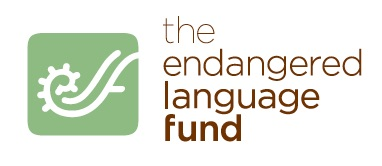
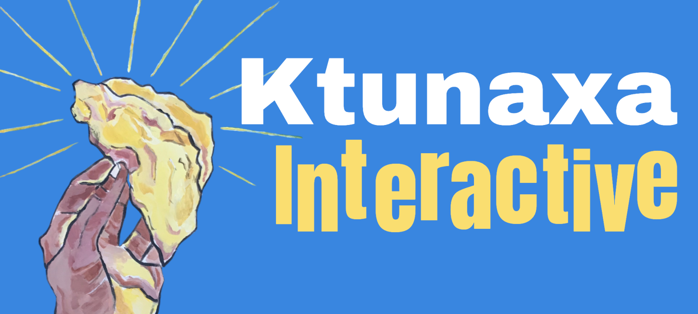

A Ktunaxa Interactive Language Adventure
This interactive story-game has been developed by the Ktunaxa Interactive Language Learning Collective. The project is endorsed by the Tribal Council of the Confederated Salish and Kootenai Tribes who reviews the language and cultural content before it goes public. A special thanks to Francis Auld for his continued support and advice on Ksanka language and culture during the development process.
We thank the Endangered Language Fund who sponsored this project with Native Voices Endowment Grants in 2020 and 2022.
 